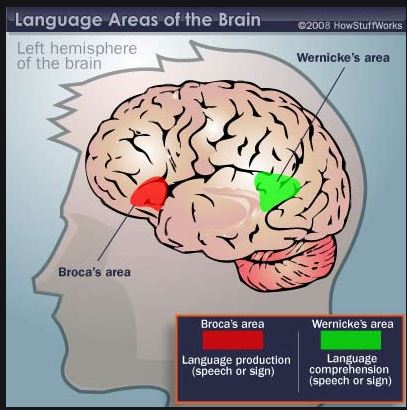
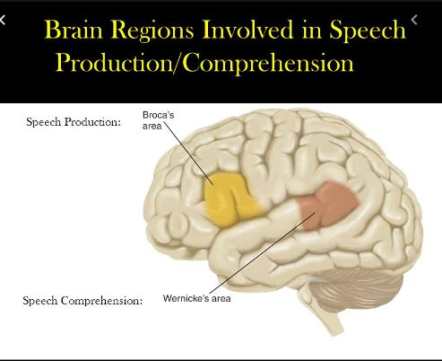
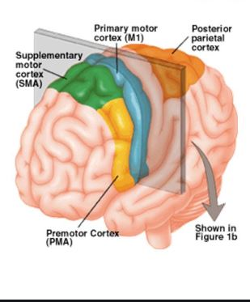
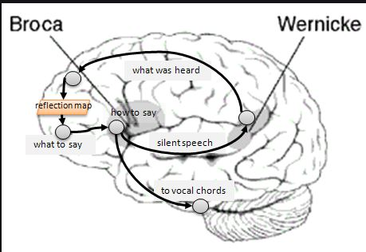
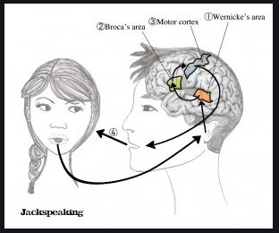

<link href="https://fonts.googleapis.com/css?family=Niconne&display=swap" rel="stylesheet">
<link href="https://fonts.googleapis.com/css?family=Teko&display=swap" rel="stylesheet">
 <link rel="stylesheet" href="https://stackpath.bootstrapcdn.com/bootstrap/4.3.1/css/bootstrap.min.css"
    integrity="sha384-ggOyR0iXCbMQv3Xipma34MD+dH/1fQ784/j6cY/iJTQUOhcWr7x9JvoRxT2MZw1T" crossorigin="anonymous"> 

<!DOCTYPE html>
<title>Ͼ✠JavaLessons✠Ͼ</title>
<link rel="icon"  type="image/JPG" href="carsanter.JPG">

<style>
html,
body {
  min-width: 290px;
  color: #4d4e53;
  background-color: #c0c2ab;
  font-family: "Open Sans", Arial, sans-serif;
  line-height: 1.5;
}
#navbar {
  position: fixed;
  min-width: 450px;
  top: 0px;
  left: 0px;
  width: 300px;
  height: 100%;
  border-right: solid;
  border-color: rgba(0, 22, 22, 0.4);
}
header {
  color: black;
  margin: 10px;
  text-align: center;
  font-size: 1.3em;
  font-weight: bold;
}
#main-doc header {
  text-align: center;
  margin: 0px;
}
#navbar ul {
  height: 88%;
  padding: 0;
  overflow-y: auto;
  overflow-x: hidden;
}
#navbar li {
  color: #4d4e53;
  border-top: 1px solid;
  list-style: none;
  position: relative;
  width: 100%;
}
#navbar a {
  display: block;
  padding: 10px 30px;
  color: #4d4e53;
  text-decoration: none;
  cursor: pointer;
}
#main-doc {
  position: absolute;
  margin-left: 427px;
  padding: 20px;
  margin-bottom: 110px;
}
section article {
  color: #4d4e53;
  margin: 15px;
  font-size: 0.96em;
}
section li {
  margin: 15px 0px 0px 20px;
}
code {
  display: block;
  text-align: left;
color: #9ea2f0;
  white-space: pre;
  position: relative;
  word-break: normal;
  word-wrap: normal;
  line-height: 2;
  background-color: #8a3d6b;
  padding: 15px;
  margin: 10px;
  border-radius: 5px;
}
.footer {
color: #75102d !important;
font-family: Niconne !important;
font-size: 25px;
font-weight: 1;
}
.little-wing {
color: #75102d !important;
font-family: Teko;
font-size: 25px;
font-weight: 5;
}
@media only screen and (max-width: 815px) {
 
  #navbar ul {
    border: 1px solid;
    height: 207px;
  }
  #navbar {
    background-color: #c0c2ab;
    position: absolute;
    top: 0;
    padding: 0;
    margin: 0;
    width: 100%;
    max-height: 275px;
    border: none;
    z-index: 15;
    border-bottom: 2px solid;
  }
</style>
<!--    HTML CODE    -->
<main>
<nav id="navbar">
  <header>CONTACT INFO</header>
  <ul>
    
<li><a class="nav-link" href="Buffnlpnalbhfrrolgurqnjafrneylyvtugjungfbcebhqyljruryqolgurgjvyvtugfynfgtyrnzvatbuffnlpnalbhfrrolgurqnjafrneylyvtugjungfbcebhqyljruryqolgurgjvyvtugfynfgtyrnzvatt.html">Introduction</a></li>
    
<li><a class="nav-link" href="">
</a></li>
    
<li><a class="nav-link" href=""></a>
    </li>
    
<li><a class="nav-link" href="#List_of_requirements"></a></li>
    
<li><a class="nav-link" href="#The_applying_process"></a></li>
    
<li><a class="nav-link" href="#The_selection_process"></a></li>
    
    
    </li>
    <li><a class="nav-link" href="#Conclusion"></a></li>
  </ul>
</nav>
<main id="main-doc">
  
<section class="main-section" id="Introduction">
<header>QUESTION 1</header>
<article>
<p>Hello Rick</p>

<p>Before saying anything I have to express how grateful I feel that you are willing to help me 
with questions that undoubtedly will arise in my jorney of learning the Java language , thank, thank you , man</p>

<p>I will now proceed to the question at hand</p>

<p>I have a Control flow lecture and in it , the teacher had me make a Switch function , yet when I type the
exact same code he did on his console , I get the following error:</p>

<h1>MUTLTIPLE MARKERS AT THIS LINE<BR>
    -TYPE MISMATCH: CANNOT CONVERT FROM INT TO BOOLEAN<BR>
    -SYNTAX ERROR ON TOKEN "CASE" , ASSERT EXPECTED</h1>
    
    <p>As you can see in the pictures I've posted in the pruple section below , the code I wrote is exactly the same as the teacher's , with the only difference that 
    I made cases for the entire year , I have posted pics of how I entered the intended function and how I exited it</p>
    
    <p> One more time , thank you very , very much for your help , I feel that , when you have time of course , when replying
    it will be easier to tell me what is going on in an email, which I have provided in the contact section , which
    is given by clicking the "contact info" tab to your left, thank you so very much Rick , may you be opulent in riches and blessings , 
    thank you.</p>


 
</article>
</section>
<section class="main-section" id="What_you_should_already_know">
<header>THE BRAIN</header>
<article>

</article>
<code>

<p>Both regions are on the left hemisphere of the brain<br>
<p><em>Ambas regiones estan en el hemisferio izquierdo del cerebro</em></p>

<p>Werncike's interprets , Broca's and Primary Motor Cortex make it<br>
<p><em>Wernicke interpreta , Broca y el Cortex Motor Primario lo hacen</em></p>

<p>Primary Motor Cortex's breadth spans across both hemispheres.<br>
<p><em>La extension del  Cortex Motor Primario  abarca a traves de ambos hemisferios</em></p>

<p> The internal interaction<br>
<em>La interaccion interna</em></p>

<p>When we speak with another person<br>
<em>Cuando hablamos con otra persona</em></p>
</code>
<article>
<div class="little-wing">
<a href="Buffnlpnalbhfrrolgurqnjafrneylyvtugjungfbcebhqyljruryqolgurgjvyvtugfynfgtyrnzvatbuffnlpnalbhfrrolgurqnjafrneylyvtugjungfbcebhqyljruryqolgurgjvyvtugfynfgtyrnzvatt.html">Back to landing page</a>
</p>
<br>
<br>
</article>
</section>
<center>
<footer class="footer">&copy 2019. Website by Kaiser Santosvictorious.  <br>-  &nbsp; Bellevue , Wa, USA.</footer>
</center>
